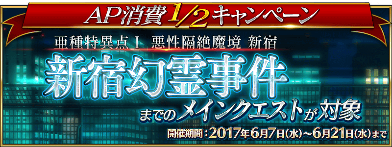
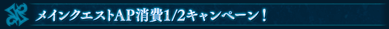
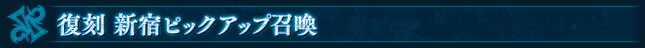
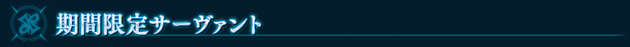
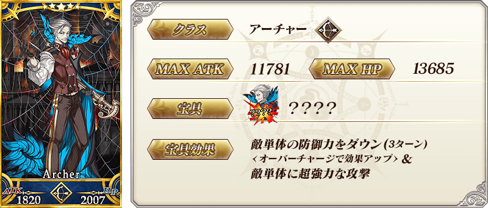
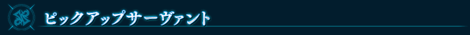
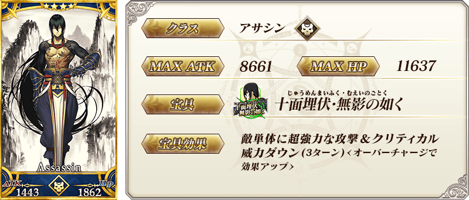
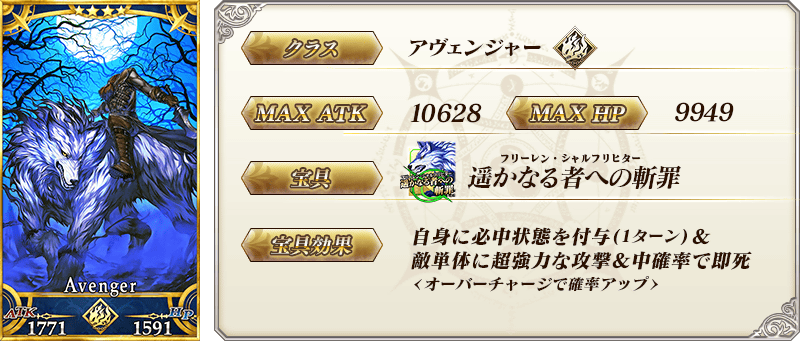
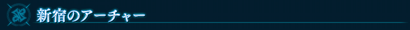
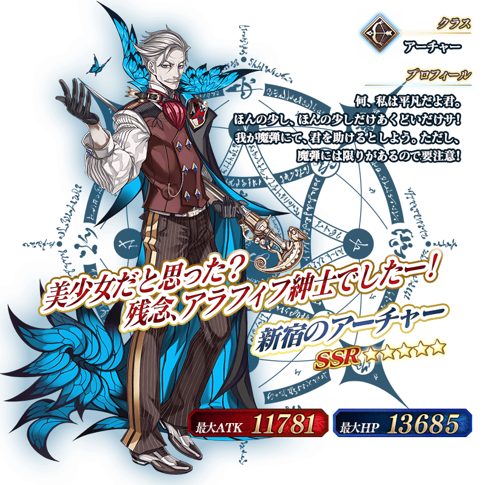

◆主線關卡AP消費1/2◆
舉辦直到亞種特異點Ⅰ 惡性隔絕魔境 新宿為止的主線關卡AP消費1/2宣傳活動。
無論如何藉此機會推進主線關卡吧！
◆舉辦期間◆
2017年6月7日(三)16:00～6月21日(三)15:59
◆對象關卡◆
直到亞種特異點Ⅰ 惡性隔絕魔境 新宿為止的全部主線關卡
※直到亞種特異點Ⅰ 惡性隔絕魔境 新宿為止的自由關卡及幕間的物語為對象外


◆「復刻 新宿Pick Up召喚」期間◆
期間:2017年6月7日(三)16:00～6月21日(三)15:59
以期間限定舉辦「復刻 新宿Pick Up召喚」！
復刻於2017年2月舉辦的新宿Pick Up召喚！
※未到達亞種特異點Ⅰ的狀態也能進行復刻 新宿Pick Up召喚。
在「亞種特異點Ⅰ 惡性隔絕魔境 新宿 新宿幻靈事件」活躍的Servant「★5(SSR)新宿的Archer」以期間限定登場！
另外期間中「★4(SR)新宿的Assassin」「★4(SR)新宿的Avenger」Pick Up！
Pick Up期間中，期間限定Servant、Pick Up Servant的出現機率提升！
詳情請在聖晶石召喚畫面左下的召喚詳細確認。
※新宿的Archer在Pick Up期間結束後不會追加到故事召喚。
※關於真名尚未判明的Servant，透過主線關卡的進行會讓Servant及一部份寶具的名稱變化。
10次召喚中確定1張★4(SR)以上和確定1位★3(R)以上的Servant！
※確定★4(SR)以上包含Servant和概念禮裝。
※所謂「出現機率提升」意指比同稀有度的Servant及概念禮裝出現機率更高的設定。







